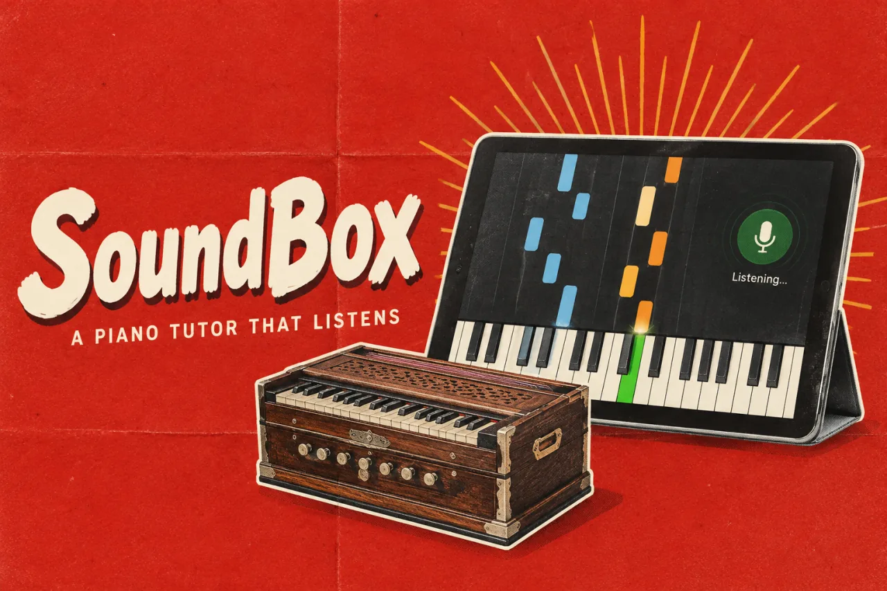

SoundBoxProduct story · 4 min read
The song waits until you are ready.
A piano-learning app that connects familiar songs, visible keys, and listening-based progression at the player’s pace.
Read the case study

The practice screen keeps the current chord, keyboard and pace controls together.
View full size ↗01 The problem
What changes when the lesson follows the learner’s pace?
Someone who wants to play a familiar song may not yet read notation or keep up with a timed lesson. SoundBox starts from the song and a picture of the keyboard, then waits for the player to produce the expected note or chord.
Designed for Beginner practising a song. Find the notes and continue when ready.
User context Design assumption
Repeating a difficult passage at a comfortable pace.
- The friction
- A fixed tempo or unclear listening feedback can interrupt practice.
- Design implication
- Wait for the learner and make retry states clear.
Example situation · illustrative scenario. Imagine knowing the song you want to play, but being unable to read a page of notation or keep up with a timed lesson. Finding the right key already takes attention.
02 The outcome
Stay with the passage. Continue when ready.
I designed practice around visible keys, listening-based progression and repeatable passages. Different arrangements give learners more than one way into a song. The app lets them stay with a difficult note; recognition reliability and learning outcomes need separate evaluation.
More about the experience
- Recognise. The current chord and keyboard remain visible.
- Repeat. A passage can be approached at the learner’s pace.
- Control the pace. Wait for me is an explicit mode.
03 The direction
The learner sets the pace
Removing the clock changes the interaction. The default practice loop waits for the expected note or chord, with space to retry.
Product artifact · wait-mode practice
My direction. I connected a visible keyboard, familiar songs, and listening-based progression to make the next musical action understandable.
Process and product scope
I organised the learning experience around a song, an approachable arrangement, and a repeatable passage. The default practice mode waits for the learner instead of making the person chase a clock.
Listening feedback needs a clear ready, heard, and retry state. Recognition reliability has not been established across real instruments and rooms, so recovery deserves as much design attention as successful progression.
- 3
- arrangement levels
- Wait mode
- default practice rhythm
- On-device
- audio processing
- See
Know which key or chord comes next.
- Play
Try it without racing a timer.
- Listen
Let the app recognise the input.
- Repeat
Loop the difficult passage when useful.
04 Design decisions
Let the learner set the pace.
Open a decision to see the reasoning and trade-off.
01Make progression depend on readiness
The default mode advances after the expected musical input rather than at a fixed tempo.
Why this matters. A beginner can concentrate on finding the right movement without constantly falling behind the interface.
The trade-off. Recognition errors can still interrupt the experience, so recovery and a clear input state are essential.
02Offer more than one way into a song
Chord, simplified, and full-melody arrangements support different levels of challenge.
Why this matters. A learner can begin with something recognisable and increase complexity when ready.
The trade-off. An automatically simplified arrangement still needs musical review; lower note density is not always easier to play.
03Support repetition without punishment
Section looping and restrained progress mechanics accompany local practice history.
Why this matters. Practice often means repeating one difficult passage, not completing a song from the beginning.
The trade-off. Streaks and XP can distract from learning if they reward activity without meaningful progress.
05 Reflection
A learning tool should make another attempt feel possible.
I would watch the full practice loop: listening, finding a key, playing it, interpreting the feedback and trying again. A passage-completion count would miss much of what makes that experience frustrating or useful.
What I would evaluate next proposed work
- observe a beginner learning one short passage with the default wait mode, including how they recover from missed detections.
- test recognised notes and chords under varied room noise, microphones, and keyboards; report false advances separately from missed inputs.
Different starting points. One place to meet.